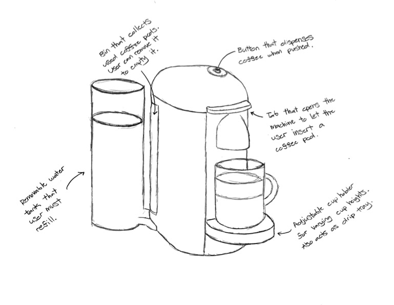
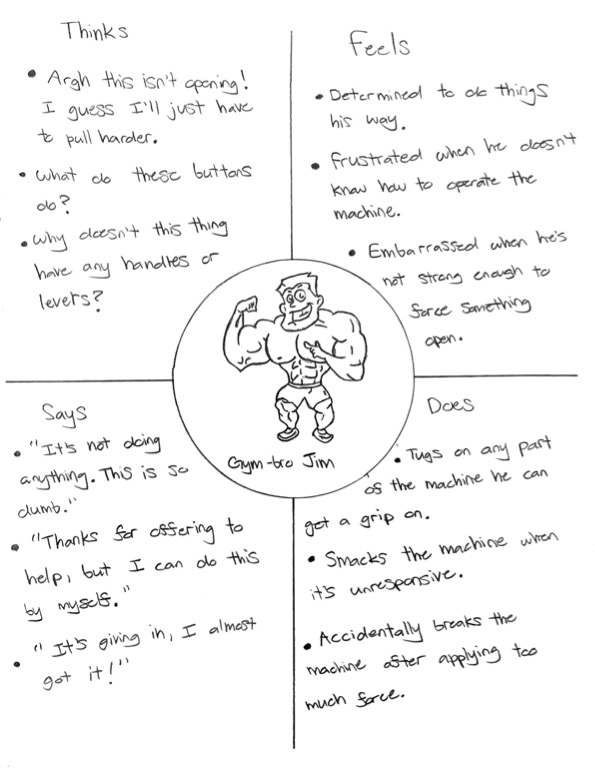
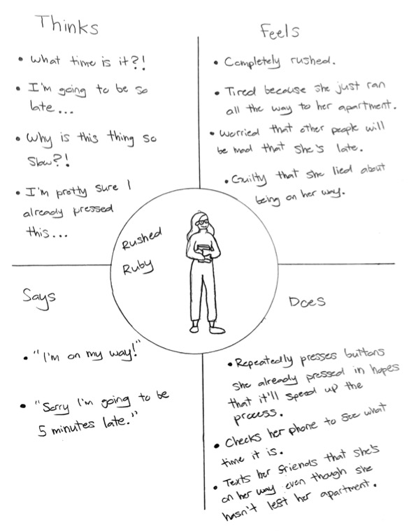
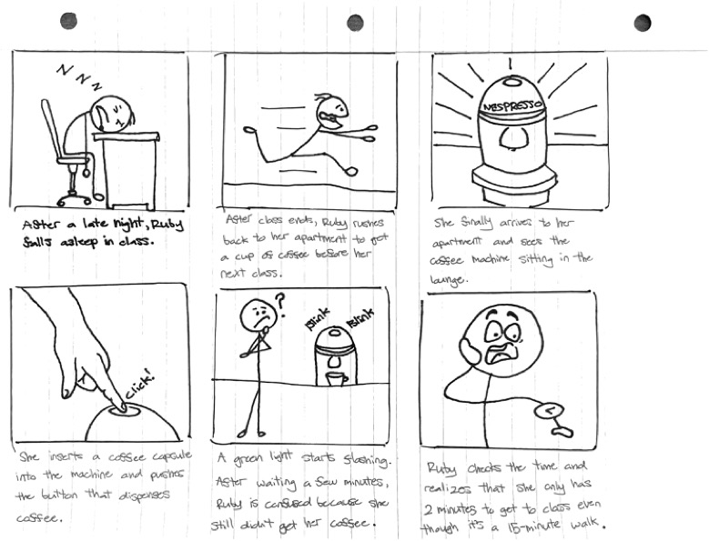
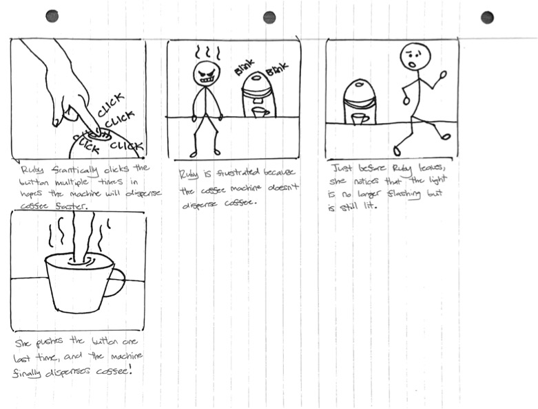

Personas & Storyboarding
Overview
I observed people interacting with a Nespresso coffee machine, interviewed them about their experiences, created two personas based on my observations and their responses, then illustrated a storyboard for one of my personas.
Part 1: Preparation
I first performed a contextual inquiry: I observed a Nespresso coffee machine sitting in the lounge of an apartment, created interview questions, then asked these questions to people while they were interacting with the Nespresso. To better understand the Nespresso, I drew a sketch of it and labeled its interactive components.
Nespresso makes making coffee easy. Other coffee machines require users to purchase coffee beans and filter paper, measure out how many beans they want to use, grind them, then wait several minutes for their coffee to brew. With Nespresso, a user simply taps under the tab to open the machine, inserts a capsule that contains ground beans, taps on top of the tab to close the machine, and presses a button for their coffee. Note that the user will have to press the button twice. The first press will preheat the Nespresso, which is indicated by a flashing green light. Once the light stops flashing, the user can press the button a second time and the Nespresso will dispense coffee.
Part 2: Recording Observations
I observed 3 people using the Nespresso. Here are key observations I learned:
- All users first interacted with the tab to open the Nespresso. Only some of the users correctly tapped the tab; others used the tab as a handle to pry it open.
- All users—including those who used the tab as a handle—tapped the tab to close the Nespresso.
- All users correctly pressed the button to dispense coffee. Only some users waited for the lights to stop flashing before pressing the button again; others repeatedly pressed the button.
Here are the interview questions that I asked each user along with a summary of their responses:
- Just from looking at the Nespresso, do you think you would know how to use it?
- Which components of the Nespresso do you think you can interact with and what do you think each of their functions are?
- How did you feel in each step of the process of making coffee?
- Is the Nespresso perfectly designed? If not, how would you redesign it?
All users felt that they would know how to use the Nespresso just from looking at it.
All users were able to correctly identify all of the interactable components on the Nespresso and their primary functions. However, no user mentioned the possibility of the singular button on the machine having other functions in addition to dispensing coffee.
Overall, users had a positive experience making coffee using the Nespresso. Users felt that each component of the machine worked as expected and that they knew which components to interact with and when. Some users were confused that the Nespresso didn’t immediately dispense coffee after pressing the button.
Only some users felt that the Nespresso was perfectly designed. A commonly suggested redesign was to add a text display that lets the user know when the machine is preheating and ready to dispense coffee. Another suggestion was to replace the tab with buttons that open and close the Nespresso.
Part 3: Personas
I created two personas based on the common trends I observed among the users I interviewed.
Persona 1: Gym-bro Jim
Gym-bro Jim is a college student who believes any obstacle can be overcome with hard work and grit. He’s used to doing things manually, so he doesn’t realize that the Nespresso opens automatically. Like some of the users I interviewed, instead of tapping the tab, gym-bro Jim uses the tab as a handle to pry the Nespresso open.
Persona 2: Rushed Ruby
Rushed Ruby is a college student with a busy schedule who’s always rushing to get to her next meeting. In between classes, she takes a detour back to her apartment for a cup of coffee to stay alert during the rest of her day. She’s in a hurry, so she’s frustrated and confused that the Nespresso isn’t dispensing coffee even after she pressed the button. Like the users I interviewed, Rushed Ruby repeatedly presses the button while the Nespresso is preheating.
Part 4: Storyboards
I created a storyboard for Rushed Ruby.
 